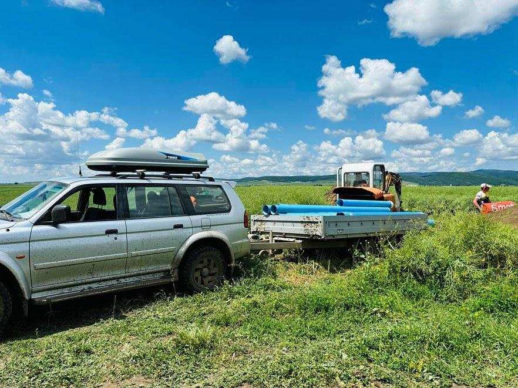
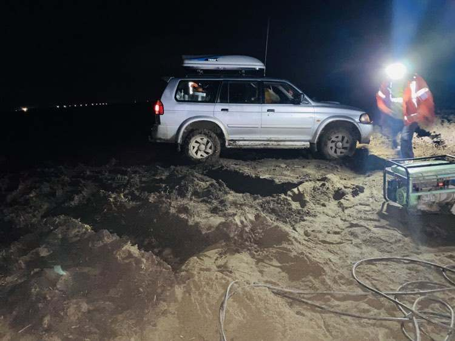

aruncați o privire asupra acestor fotografii
Scurgere de gaz
Săparea unui puț poate duce la scurgeri de gaz, deși este rar, se poate întâmpla. Din fericire, a fost doar dioxid de carbon.

Țevi pentru puțuri
Pentru forajul puțurilor folosim cele mai bune țevi, pe care le livrăm și utilizăm personal.

Munca de calitate
Angajații noștri lucrează foarte repede și cu precizie, indiferent dacă este ploaie, noroi, zăpadă sau căldură. Întotdeauna își dau 100% pentru a realiza o muncă de calitate.

Noapte
Avantajul nostru este că lucrăm și noaptea. Nu pierdem timpul prețios al nimănui; ceea ce promitem, ținem.